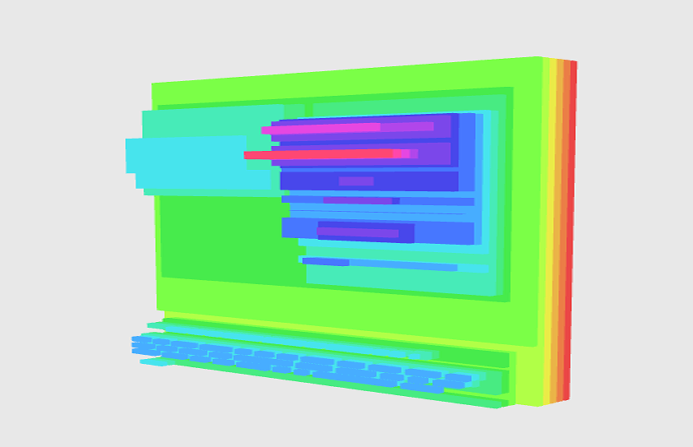
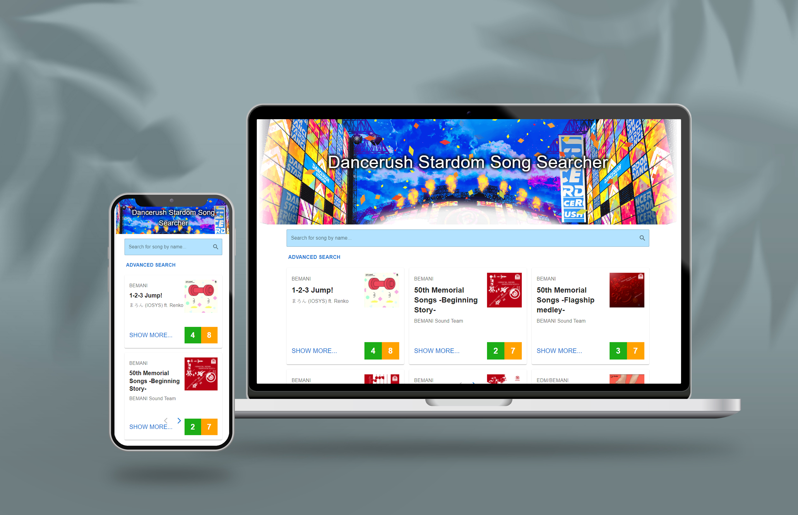

I’m a full stack engineer with a degree in Software Engineering from the
University of New South Wales.
I have a passion for understanding user behavior and enjoy turning complex problems into simple, beautiful,
and intuitive designs.
Work History
- Full Stack Engineer & Frontend Lead | @Unicard Systems, 2023-Present
- Software Engineering Academic | @University of New South Wales, 2020-2023
- Front End Software Intern | @Timeweave, 2019-2020
Education
- B.S. in Software Engineering (Honours) | @University of New South Wales, 2018-2023
Connect with Me
LinkedIn
UX Case Studies
Background Check System Re-Design For Top 20 Global Airline
- Spearheaded redesign and development of a background check system for a top 20 global airline company.
- Improved UI/UX and data processing, reducing errors and application times by 50%.
- Integrated Australian government web solutions with cross-functional collaboration with client.
- Utilised React, TypeScript, C#, and AWS systems to create a scalable system capable of processing 20,000 applicants annually.

University Events Mobile App
- Designed and built a mobile app to help users create and schedule events with friends.
- Prototyped high fidelity prototypes using Figma to test user workflows.
- Used React Native to create a mobile responsive interface.

Water Saving Application Prototype Design
- Created low fidelity prototypes for conducting testing on a hypothetical water-saving app.
- Conducted user research surveys to query issues with existing data visualization websites.
- Worked with end users to make data visualization more accessible across devices.
Side Projects

Image by Vectonauta on Freepik
DOM Visualiser
- Developed a web tool for generating 3D visual representations of HTML/CSS.
- Used WebGL, ThreeJS and JavaScript for dynamic visualizations.

Dancerush Song Searcher
- Created an app to help rhythm game enthusiasts find songs by skill level.
- Designed a mobile responsive interface with video search functionalities.
- Utilized self-hosted Java Spring Boot API and React to display real-time results.
{kind=link}
{kind=link}
{kind=link}